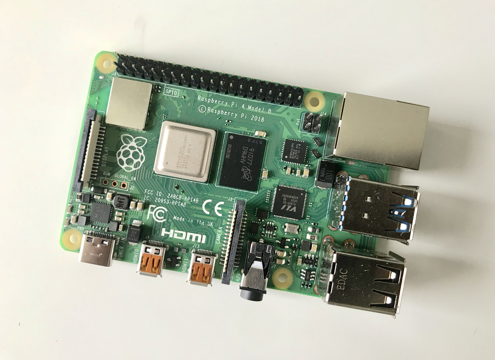

How to Set Up A Photo Library with Raspberry Pi

Recent I brought a Raspberry Pi 4 and started playing with it. I first moved my Bitcoin algorithmic trading strategy from a VPS to the Pi, which dropped the monthly VPS fee from my credit card bill.
My second project is to create a photo library hosted through HTTP, where I can share pictures with my family on the other side of the Pacific ocean. Comparing to other personal cloud storages, this project come with several great advantages:
- easy to use (only requires a link and a browser)
- cheap (can use an idle hard drive as storage)
- customizable (easy to change the ascetics and layout)
It is also a great project for one learn about the inner working of computer networking as well as front-end developing. So let’s get started.
First we will need a Raspberry Pi 4. I installed the Raspbian GUI operating system on it which is a pretty neat Linux environment to work on. Next you will have to set up NGINX and PHP. NGINX will allow us to host web server on Pi and PHP is a back-end programming language that is useful in interacting with the operating system. For this project we will need to write a PHP script which will go through all designated folders to grab all images automatically.
Next up we want to set up SSH so that we can access the Pi terminal through local networks. Then we will use the rsync tool to synchronize the pictures from my laptop to the Pi folder.1
rsync -avz -e ssh desktop/image pi@xx.xx.xx.xx:server
Here I have a /image folder set up on my Mac desktop, and I want to sync with the /home/pi/server/image folder on my Pi. Use cron to schedule this command if needed.
Now that we have all the images sync-ed over to your Pi, we can start NGINX and host a static website. Here is my setup. We run our web service on standard port 80 for HTTP and 443 for HTTPS (HTTPS is HTTP with SSL encryption, which is far more secure)/etc/nginx/sites-enable/server1
2
3
4
5
6
7
8
9
10
11
12
13
14
15
16
17
18
19
20
21
22
23
24
25server {
listen 80;
server_name _;
return 301 https://$host$request_uri;
}
server {
listen 443;
server_name _;
root /home/pi/server;
index index.php;
location / {
try_files $uri $uri/ =404;
}
location ~ \.php$ {
include snippets/fastcgi-php.conf;
fastcgi_pass unix:/var/run/php/php7.3-fpm.sock;
}
location ~ /.well-known {
allow all;
}
}
/home/pi/server/index.php1
2
3
4
5
6
7
8
9
10
11
12
13
14
15
16
17
18
19
20
21
22
23
24
25
26
27
28
29
30
31
32
33
34
35
36
37
38
39
40
41
42
43
44
45
46
47
48
49
50
51
52
<html>
<head>
<title>Welcome to My Photo Library!</title>
<style>
body {
width: auto;
margin-left: 2em;
margin-right: 2em;
font-family: Garamond, serif;
}
* {
margin: 0;
padding: 0;
}
img {
image-orientation: from-image;
}
.imgbox {
display: grid;
height: 100%;
}
.center-fit {
max-width: 100%;
max-height: 100vh;
margin: auto;
}
li {
list-style-type:none;
margin-right:10px;
margin-bottom:10px;
float:left;
}
</style>
</head>
<body>
<h1>Welcome to My Photo Library!</h1>
<div class="imgbox">
<ul>
<?php
$handle = opendir(dirname(realpath(__FILE__)).'/image/');
while($file = readdir($handle)){
if($file !== '.' && $file !== '..' && $file !== '.DS_Store'){
echo '<img class="center-fit" src="image/'.$file.'">';
}
}
?>
</ul>
</div>
</body>
</html>
Now open up <local ip address of my pi>:443 on my Macbook connected to the same WLAN as my Pi, I will be able to see the webpage I host.

Next we need to configure our router for Port Forwarding and then set up a Dynamic DNS service. The No-IP website currently provides free DDNS service. After setting up DDNS, we can then use the hostname from your DDNS provider to access the dynamic IP[1] address of our router, which will be forwarded to the static IP of our raspberry pi with the port that NGINX used to host the website. For example, we just need to type https://<my hostname from ddns provider>:<my router port designated to forward> in the browser to view the photo library anywhere in the world:)
[1] In my case my ISP uses Carrier-Grade NAT, which means my public IP is different than my WAN IP. I will need to configure the DDNS provider to access my WAN IP, in order for this to work.